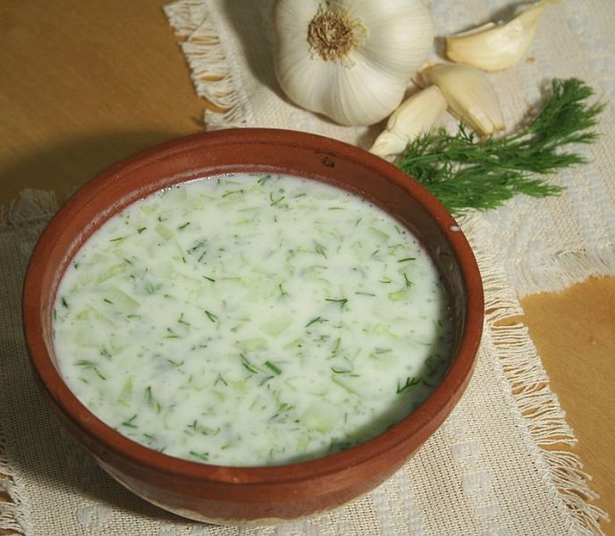

Tarator

Тараторът е вид студена млечна супа, традиционна в българската кухня, приготвяна от кисело мляко, вода, ситно нарязана или настъргана краставица, олио или зехтин, сол, копър и счукан, пресован или нарязан на ситно чесън, които се смесват и разбъркват. Към така приготвената смес по желание могат да се добавят счукани орехови ядки.
- 750 гр. кисело мляко
- 1 краставица
- 2 супени лъжици зехтин или растително олио
- 1 – 2 скилидки чесън
- 2 – 3 супени лъжици смлени орехови ядки
- копър
- една щипка сол
Начин на приготвяне
- Към ситно нарязаната или настъргана краставица се добавят счукан чесън, ситно нарязан копър и зехтин.
- Kъм тази смес се добавят кисело мляко и студена вода. Разбърква се добре и се прибавя солта. Най-накрая се поръсва със смлени орехови ядки.
- Сервира се студен, като може да се добави и лед за запазване на температурата. Съхранява се в хладилник.